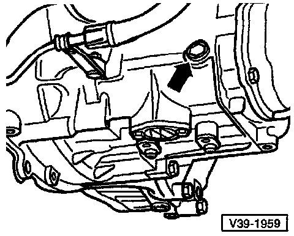

Checking/Filling Transmission

Checking
- Remove screw for transmission oil inspection (arrow)
- The oil level is correct if the transmission is filled to the lower edge of the oil filler hole
- Install screw (arrow)
Filling
- Remove screw (arrow)
- Fill with transmission oil to lower edge of filler hole
- Install screw (arrow)
- Start the engine, engage a gear and let the transmission run approx. 2 minutes
- Shut engine off
- Remove screw (arrow)
- Add transmission oil as necessary to the lower edge of filler hole
- Install screw (arrow)